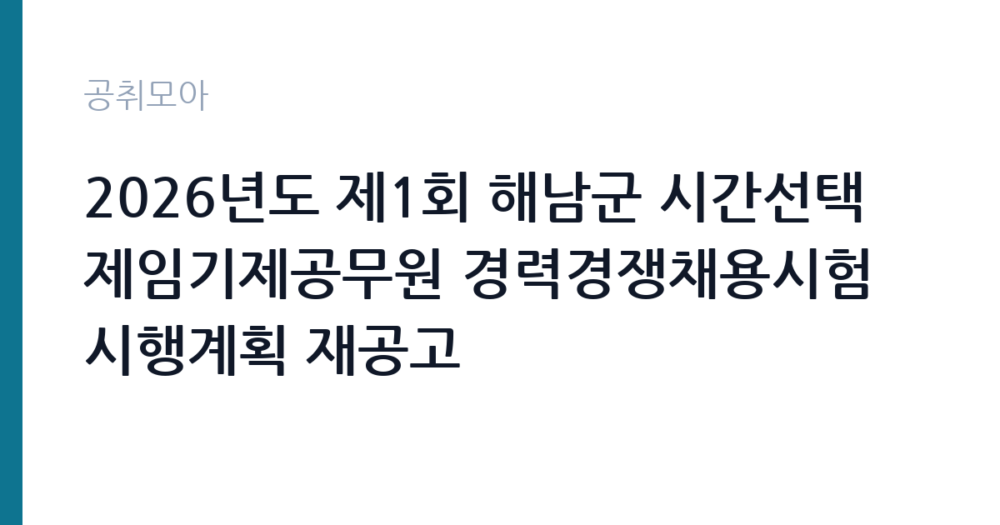

[지자체] 2026년도 제1회 해남군 시간선택제임기제공무원 경력경쟁채용시험 시행계획 재공고
전남광주통합특별시 해남군 · 전남 · 마감 2026-10-08 (D-14) · 출처 나라일터

한눈에 보는 모집 조건
| 기관 | 전남광주통합특별시 해남군 |
|---|---|
| 공고명 | 2026년도 제1회 해남군 시간선택제임기제공무원 경력경쟁채용시험 시행계획 재공고 |
| 고용형태 | 임기제 |
| 근무지 | 전남 |
| 게시일 | 2026-09-24 |
| 마감일 | 2026-10-08 (D-14) |
지원자격, 이렇게 읽으세요
- 시간선택임기제 나급 1명
- 접수 ~2026-10-08 마감
- 세부 조건은 원문 공고문 확인
이 시험은 경력경쟁채용이므로 필기시험 대신 학위와 경력, 자격증으로 지원 자격을 심사합니다. 시간선택제임기제 나급에 지원하는 데 필요한 관련 분야 근무 경력 연수와 인정 범위는 원문 공고문의 응시자격표에서 확인하셔야 합니다. 경력 인정 기준일과 비상근이나 시간제 경력의 환산 방식이 적혀 있으니 날짜를 달력에 대고 계산해 보시기 바랍니다. 시간선택제는 주당 근무시간이 정해져 있는데, 모집 분야마다 15시간부터 35시간까지 다릅니다. 주당 근무시간에 따라 보수가 달라지므로 지원 전에 반드시 확인하시기 바랍니다. 거주지 제한이 걸려 있는지, 전입 예정자도 응시할 수 있는지도 원문에서 확인하시기 바랍니다.
이 공고의 포인트
이 공고의 가장 큰 포인트는 세 가지입니다. 첫째, 재공고라는 점입니다. 1차에서 미달이나 적격자 미달이 발생했을 가능성이 있어 조건을 갖춘 분께는 합격 가능성이 상대적으로 열려 있습니다. 둘째, 시간선택제라는 근무 형태입니다. 전일제 공무원이 부담스러운 분, 자녀 돌봄이나 자기계발 시간을 확보하고 싶은 분께 맞는 선택지입니다. 셋째, 해남군 근무라는 점입니다. 전남 서남권에 거주하시거나 귀농이나 귀촌과 함께 안정적인 일자리를 찾는 분께는 지역 근무가 장점이 됩니다. 나급은 임기제 등급 가부터 마급 중 상위 등급에 속해 맡는 업무의 책임도와 대우가 하위 등급보다 높게 책정됩니다.
전형은 어떻게 진행되나
임기제 경력경쟁채용의 전형은 보통 서류전형과 면접시험 두 단계로 진행됩니다. 서류전형에서는 응시자격 적격 여부와 경력의 관련성을 심사하고, 면접시험에서는 공무원으로서의 자세와 전문지식, 직무수행계획을 평가합니다. 구체적인 배점과 합격자 결정 방식, 동점자 처리 기준은 원문 공고문에 적혀 있습니다. 재공고라서 일정이 촉박하게 느껴질 수 있으니 접수 마감일인 10월 8일 전에 제출 서류를 미리 준비하시기 바랍니다. 면접에서는 왜 하필 시간선택제인지, 해남군에서 어떤 일을 하고 싶은지를 묻는 경우가 많으므로 직무수행계획서를 구체적으로 써 두시기 바랍니다.
원문에서 확인한 전형 방식
해남군인사위원회 공고 제2026-7호 2026년도 제1회 해남군 시간선택제임기제공무원 경력경쟁채용시험 시행계획 재공고 2026년도 제1회 해남군 시간선택제임기제공무원 경력경쟁채용시험 시행계획을 다음과 같이 공고하오니 참신하고 유능한 인재의 많은 응시를 바랍니다. 2026년 9월 24일
이런 분께 추천해요
- 관련 분야 경력과 자격을 갖추고 시험 부담 없이 공직에 들어가고 싶은 분께 추천합니다.
- 육아나 학업, 다른 일과 병행할 수 있는 시간선택제 근무를 찾는 분께 잘 맞습니다.
- 해남군과 전남 서남권에 거주하시거나 정착을 계획 중인 분께 좋은 기회입니다.
지원 전 체크리스트
- 원문 공고문 붙임 파일에서 모집 분야의 담당 예정 직무와 주당 근무시간을 확인했습니다.
- 응시자격에 적힌 경력 연수와 인정 기준일을 달력에 대고 계산했습니다.
- 경력증명서와 자격증 사본 등 제출 서류 목록을 빠짐없이 준비했습니다.
- 접수 방법과 마감 시각을 확인하고 마감 하루 전에는 접수를 마쳤습니다.
모집 일정과 제출 타이밍
원서 접수는 2026년 10월 8일에 마감됩니다. 임기제 채용은 접수 기간이 일주일 남짓으로 짧은 경우가 많으니 마감일을 넘기지 않도록 주의하시기 바랍니다. 서류전형 합격자 발표와 면접시험 날짜는 원문 공고문의 시험 일정표에 안내되어 있습니다. 면접까지 보통 2주에서 4주 정도 간격이 있으므로 서류 접수와 동시에 면접 답변을 준비해 두시면 여유가 생깁니다. 최종합격 후 임용 시기와 임용 기간도 공고문에 명시되어 있으니 지원 전에 확인하시기 바랍니다.
직무 이해하기: 지자체
시간선택제임기제공무원은 국가나 지방자치단체에서 특정 직무를 맡아 정해진 기간 동안 근무하는 공무원입니다. 전일제 공무원과 달리 주당 근무시간이 짧고, 그 비율만큼 보수를 받습니다. 연가와 복무도 근무시간에 비례해 적용됩니다. 나급은 임기제 등급 중 상위 등급이라 정책 수립이나 사업 운영 같은 책임 있는 업무를 맡는 경우가 많습니다. 임용 기간이 끝나면 실적에 따라 연장될 수 있지만 연장이 보장되는 자리는 아니므로, 계약 조건을 정확히 이해하고 지원하시기 바랍니다.
자기소개서 작성 팁
임기제 채용의 자기소개서는 경력기술서와 직무수행계획이 사실상 당락을 가릅니다. 본인이 해 온 업무를 나열하는 데서 그치지 말고, 해남군의 해당 직무에서 그 경험을 어떻게 쓸 것인지까지 연결해서 쓰시기 바랍니다. 시간선택제를 선택한 이유도 솔직하면서 긍정적으로 풀어야 합니다. 단순히 편해서가 아니라 짧은 시간에 더 집중해서 성과를 내겠다는 각오를 보여주시기 바랍니다. 숫자로 증명할 수 있는 실적이 있다면 반드시 넣으시기 바랍니다. 처리 건수, 예산 규모, 수상 내역 같은 구체적인 수치가 설득력을 높여줍니다.
면접 준비 포인트
면접에서는 직무 전문성과 조직 적합성을 함께 봅니다. 해당 분야의 최근 이슈를 하나 정도는 깊이 있게 파악해 가시기 바랍니다. 해남군의 주요 정책 방향과 모집 분야가 맡을 업무를 연결해서 답변하면 좋은 평가를 받습니다. 시간선택제 지원자에게는 근무시간 관리 계획과 인수인계 대책을 묻는 경우가 많으니 미리 정리해 두시기 바랍니다. 재공고라는 점을 의식해 왜 이 시점에 지원했는지를 묻는다면, 공고문을 꼼꼼히 읽고 직무에 매력을 느꼈다는 진심을 전달하시기 바랍니다.
급여·근무조건 읽는 법
시간선택제임기제의 보수는 전일제 연봉을 주당 근무시간에 비례해 책정합니다. 지방공무원보수규정 제35조제6항에 시간선택제임기제 신규임용자의 연봉은 전일제 기준 연봉을 근무시간 비율로 계산하도록 정해져 있습니다. 참고할 만한 2026년 유사 사례로, 화성시 시간선택제임기제 다급 주35시간 모집의 연봉은 4,250만1천원이었습니다. 이번 모집은 나급으로 다급보다 상위 등급이므로, 같은 근무시간이라면 이를 상회하는 범위에서 책정됩니다. 정확한 연봉액과 수당, 주당 근무시간은 원문 공고문에서 확인하시기 바랍니다. 경쟁률과 합격선은 공개되지 않았으므로 원문에서 확인하시기 바랍니다.
자주 묻는 질문
- 재공고에 지원하면 불이익이 있습니까?
불이익은 없습니다. 재공고는 1차 모집에서 인원을 채우지 못해 다시 모집하는 것으로, 응시 자격만 맞으면 1차 지원 여부와 무관하게 동등하게 심사합니다. 오히려 경쟁이 완화되는 경우가 많습니다. - 시간선택제도 공무원 연금과 복지가 적용됩니까?
공무원 신분이므로 연금과 복지가 적용되지만, 일부는 근무시간 비율에 따라 계산됩니다. 정확한 적용 기준은 원문 공고문과 해남군 인사부서에 문의해서 확인하시기 바랍니다. - 근무시간을 나중에 바꿀 수 있습니까?
임용 후 근무시간 변경은 기관 사정과 규정에 따라 달라집니다. 지원 단계에서는 공고문에 적힌 주당 근무시간을 기준으로 판단하시고, 변경 가능 여부는 문의처에 확인하시기 바랍니다.
함께 보면 좋은 공고
[지자체] 2026년 제1회 함안군의회 임기제공무원(정책지원관) 채용 공고 — 마감 2026-10-07[지자체] 2026년 제4회 진주시 임기제공무원 임용시험 계획 재공고 — 마감 2026-10-08[지자체] 2026년 세종특별자치시 청원경찰 임용시험 계획 공고 정정 — 마감 2026-10-02출처: 나라일터 공개정보를 바탕으로 공취모아가 정리한 안내글입니다. 모집 조건·일정은 변경될 수 있으니 지원 전 반드시 원문 공고문을 확인하세요. 본 글은 정보 제공용이며 합격을 보장하지 않습니다.